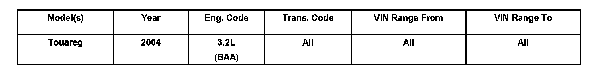
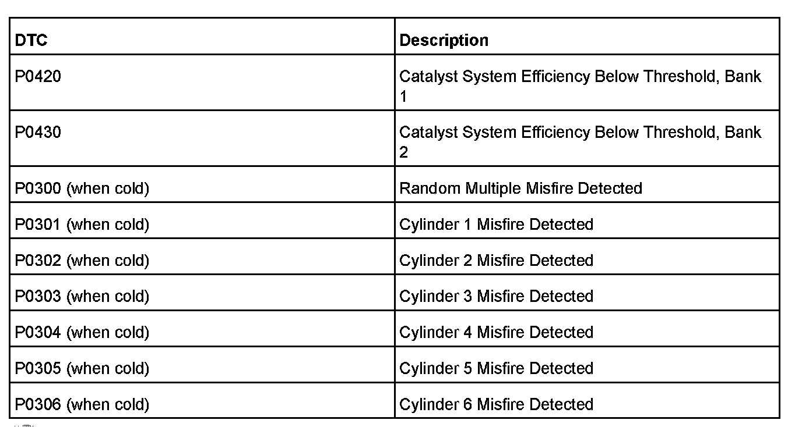
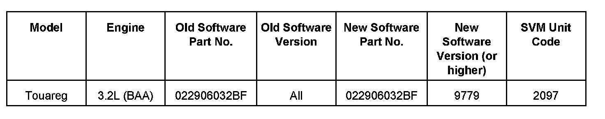
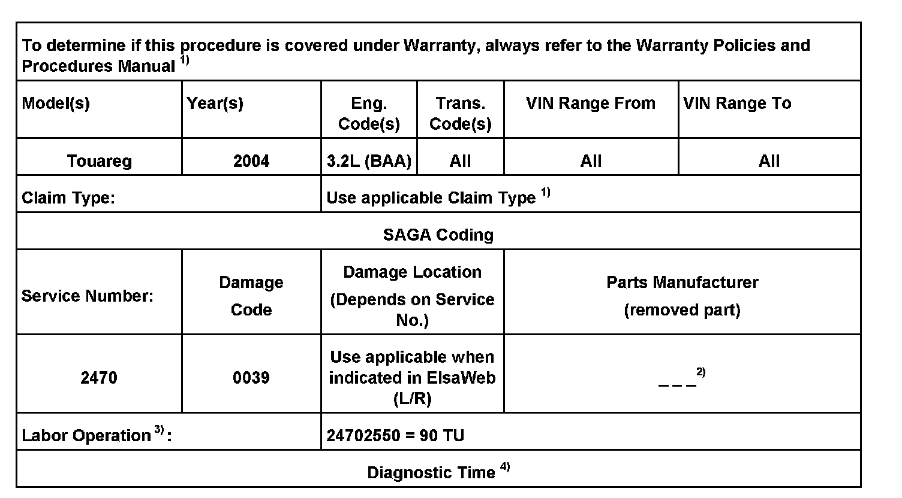
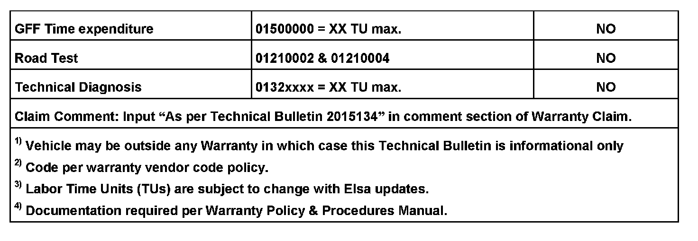
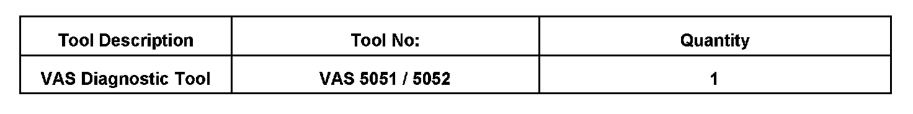
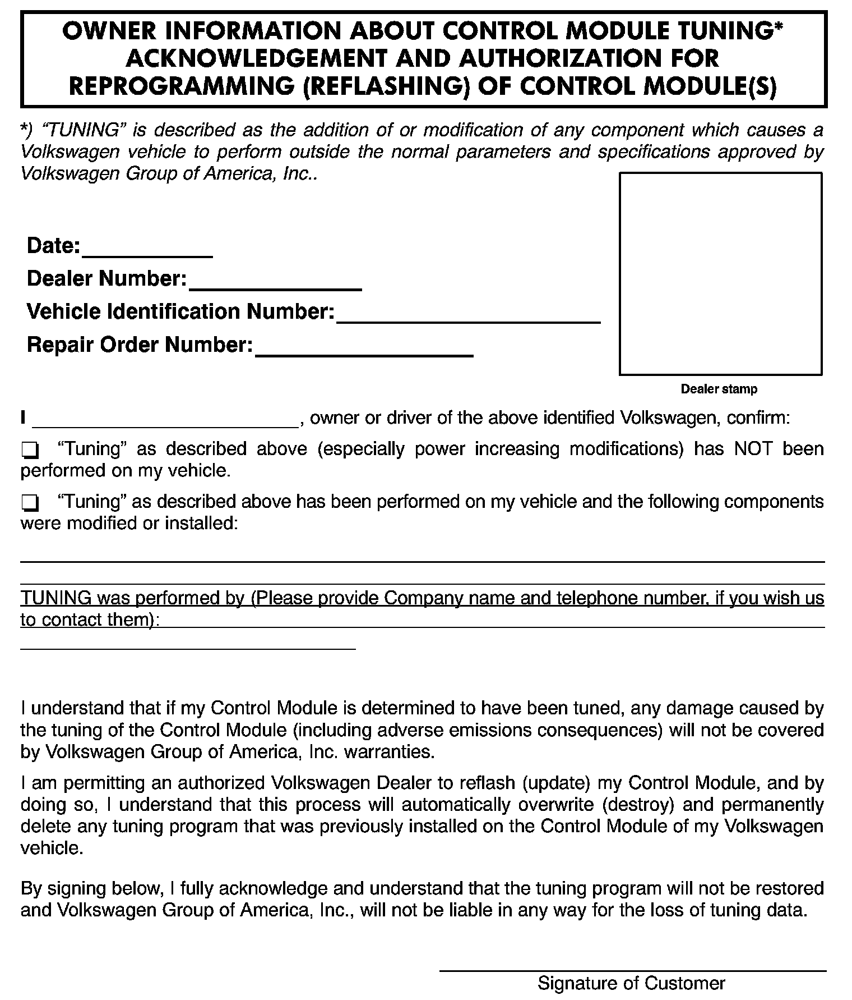

Engine Controls - MIL ON/DTC's P0420/P0430 Set
01 08 11March 6, 2008
2015134
Supersedes Technical Bulletin Group 01 number 07-52 dated June 11, 2007
and due to additional fault codes which may be stored and or additional symptoms.

Vehicle Information
Condition
Update Programming, MIL ON, DTCs P0420 and or P0430 Stored in ECM Fault Memory
Tip:
This software update also includes modification for:
Random engine misfire (P0300 P03XX) DTCs upon cold start.

One or more of the fault codes shown may be stored in the ECM Fault Memory:
Note:
DO NOT diagnose or replace components due to misfire faults before performing the update function as explained in this bulletin.
DO NOT diagnose or replace catalytic converters before performing the update function as explained in this bulletin.
Technical Background
The monitoring strategy for the catalytic converter is too sensitive causing unnecessary catalytic converter replacements and/or engine misfire when cold.
Production Solution
Improved software makes the monitoring strategy more accurate.
Service
Update-Programming Procedure:
Tip:
To Update-Programming using SVM, review and follow instructions in Technical Bulletin Instance 2014603 "Software Version Management"
The SVM Process must be completed in its entirety so the database receives the update confirmation response.
A warranty claim may not be reimbursed if there is no confirmation response to support the claim.

^ Update the Engine Control Module using the SVM Unit code as listed in the table.
The procedure can be found in GFF under Functions/ Component Selection, Software Version Management, Adapting Software.
WARNING:
The electric cooling fans may be activated during the ECM updating procedure.
Once the SVM process is complete:
^ Switch ignition OFF for 30 seconds.
^ After a minimum of 30 seconds, switch ignition ON.
^ Once Update-Programming is complete, it is recommended to use 1001 - Compiling Services prompt to clear fault codes in various control modules.
^ Reset readiness code.
Tip:
For vehicles with cold start misfire DTC's P0300 P0306, also add approved fuel additive to fuel tank before returning vehicle to the customer. See Technical Bulletin Instance 2014815.
If vehicle returns with cold start misfire DTC's P0300 P0306 after software update and consumption of entire fuel tank with fuel additive, select the "Technical Assistance" tab in ElsaWeb and follow the instructions to obtain a 6-digit access code.


Warranty
Required Parts and Tools

No Special Parts required.

Owner Information About Control Module Tuning
Additional Information
All part and service references provided in this Technical Bulletin are subject to change and/or removal.
Always check with your Parts Dept. and Repair Manuals for the latest information.